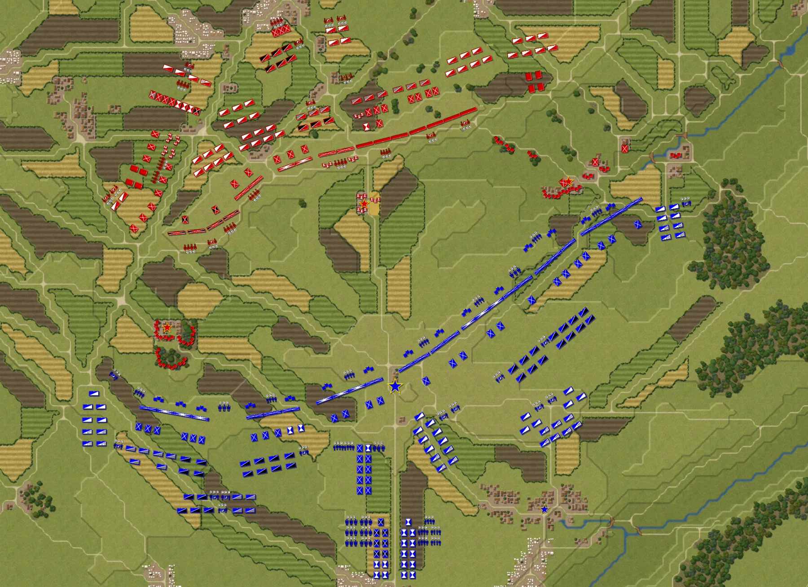

Inclass Activity 1-2: Henry's Journal
This activity allow me to practive my HTML and CSC skills by creating a simple webpage that displays a journal entry with images and text.
CSC 4370 Web Programming - Section 002
Hi, I'm Hien. I'm a senior majored in Computer Science at Georgia State University. This semester, I'm one of the student in Professor Henry's Web Programming class.
I'm here to showcase my work and skills in web development. Feel free to explore my profiles and assignments. If you have any questions, feel free to contact me through the contact section below.
I have a passion for technology and programming and I enjoy learning new programming languages and frameworks. I have experience in Python, Java, C, SQL, and Dart.
| Skill | Proficiency | Years of Experience |
|---|---|---|
| Python | Advanced | 3 |
| Java | Advanced | 2 |
| C | Intermediate | 1 |
| Dart | Beginner | 1 |
My goal is to become a full-stack web developer, a software engineer, and a cybersecurity expert. I am always looking for opportunities to improve my skills and knowledge in the field of computer science.
I have strong critical thinking and I'm a quick learner. I believe that continuous learning and hands-on experience are key to success in life. That's why I am always seeking new challenges and opportunities to grow as a professional.
I joined the GSU Programming Club and GSU Cybersecurity Club, where I have had the opportunity to collaborate with fellow students and participate in various events and competitions like Mission Truist Possible 2025. These experiences have helped me develop my problem-solving skills and deepen my understanding of cybersecurity, and they were very fun as well.
This activity allow me to practive my HTML and CSC skills by creating a simple webpage that displays a journal entry with images and text.
In this coursework, I learned the basics of Git and GitHub, including how to initialize a repository, make commits, and push changes to a remote repository. This is a paper assignment so I did not create a webpage for this assignment.
In this assignment, I created a personal portfolio webpage that showcases my skills, projects, and achievements. The page includes an index page, an about page, and a project page. This assignment did not require any CSS styling, so I focused on the HTML structure and content.
It's this page you are reading right now! This is my personal homepage that I created for Homework 1. The page includes my profile, skills, interests, and this class assignments.
TBA
In addition to web development, I have a keen interest in artificial intelligence, machine learning, and data science. I enjoy exploring new technologies and staying up-to-date with the latest trends in the tech industry.

Outside of programming, I love watching movies and playing video games. One game I really enjoy lately is a Napoleonic era strategy game called Lines of Battle. If you know about this game or if you want to discuss it, feel free to reach out!